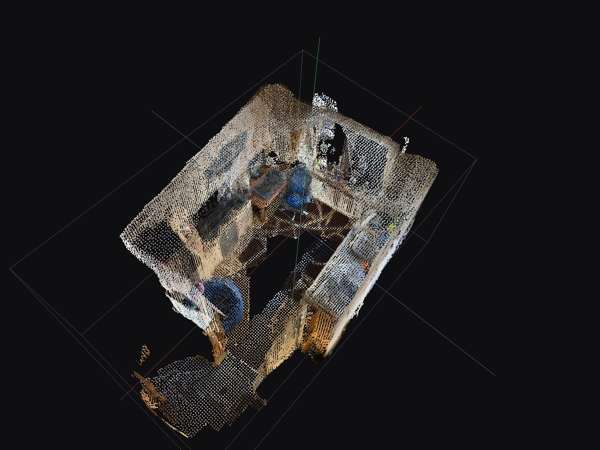
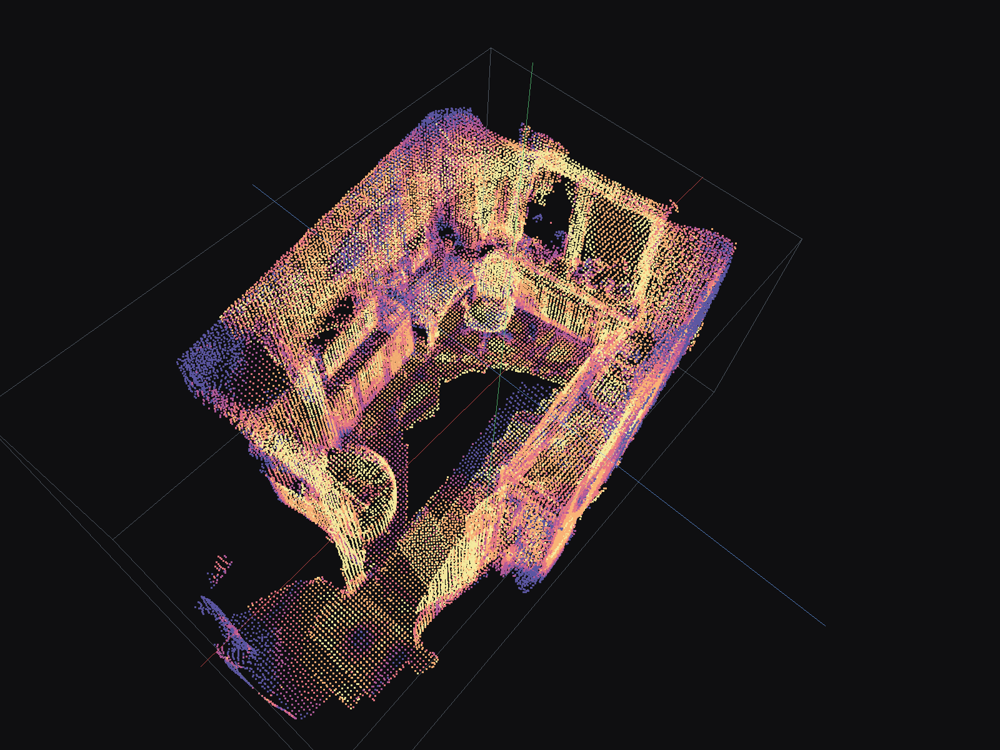
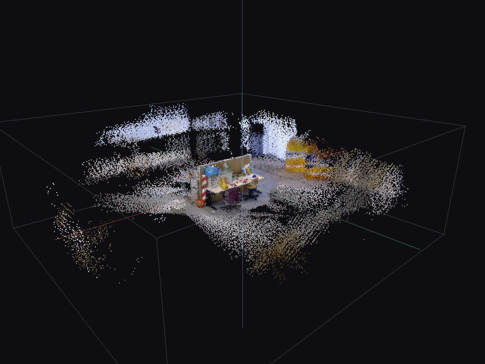
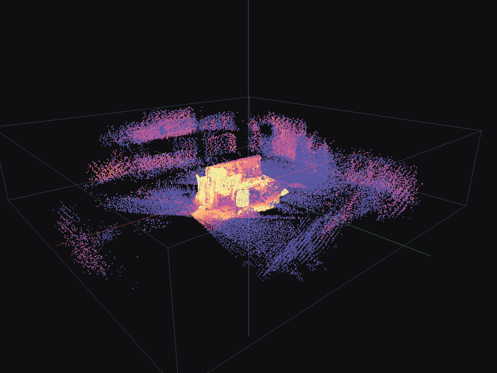
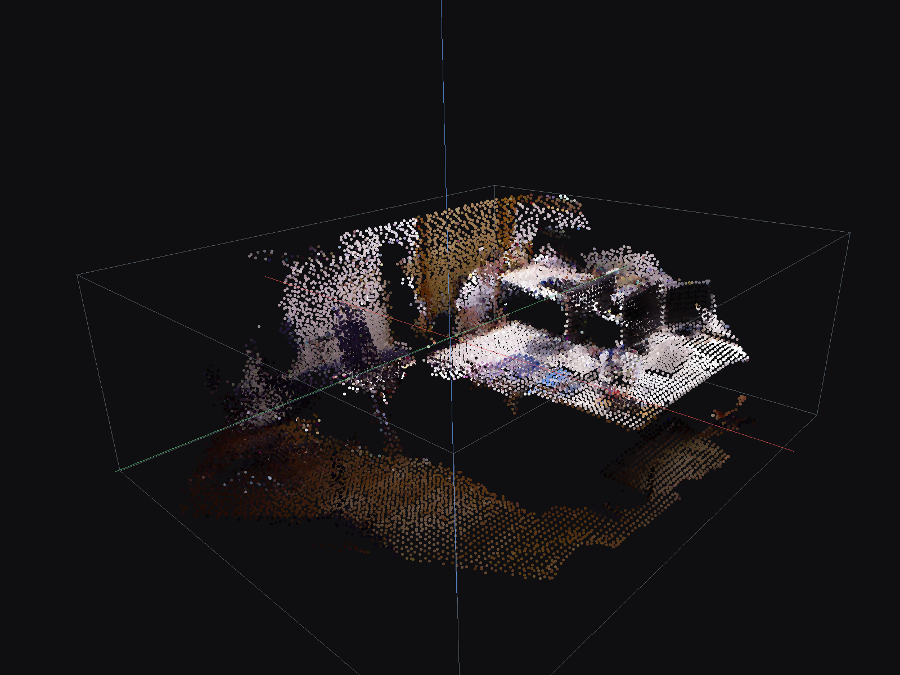
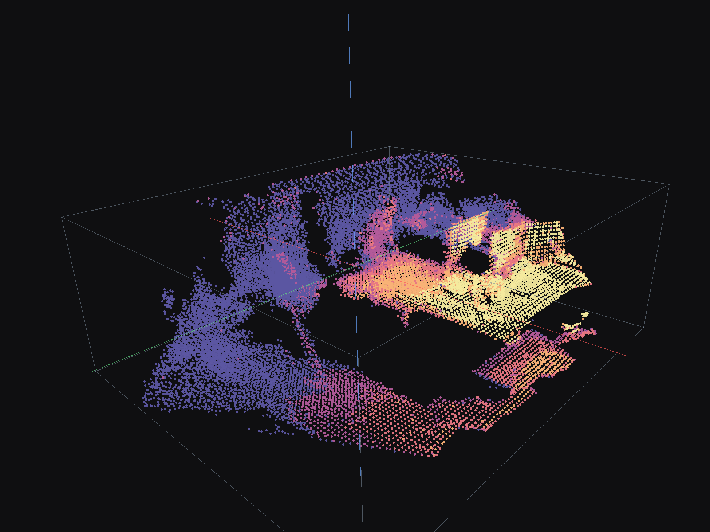

3DScape V4 Demos
Static HTML point-cloud viewers generated from ARKitScenes and TUM RGB-D sequences. These files are intended to be served through GitHub Pages or any static web server.






Reference Video
A short compressed preview from ARKitScenes scan 47333462, the sequence used for the ARKitScenes reconstruction demo.
Demo Links
| Link | Title |
|---|---|
| demos/arkitscenes_47333462_viewer.html | ARKitScenes 47333462 RGB-D fusion viewer |
| demos/arkitscenes_47333462_reliability_viewer.html | ARKitScenes 47333462 reliability diagnostic viewer |
| demos/tum_freiburg1_xyz_viewer.html | TUM freiburg1_xyz RGB-D fusion viewer |
| demos/tum_freiburg1_xyz_reliability_viewer.html | TUM freiburg1_xyz reliability diagnostic viewer |
| demos/tum_freiburg3_long_office_household_viewer.html | TUM freiburg3 long office household RGB-D fusion viewer |
| demos/tum_freiburg3_long_office_household_reliability_viewer.html | TUM freiburg3 long office household reliability diagnostic viewer |